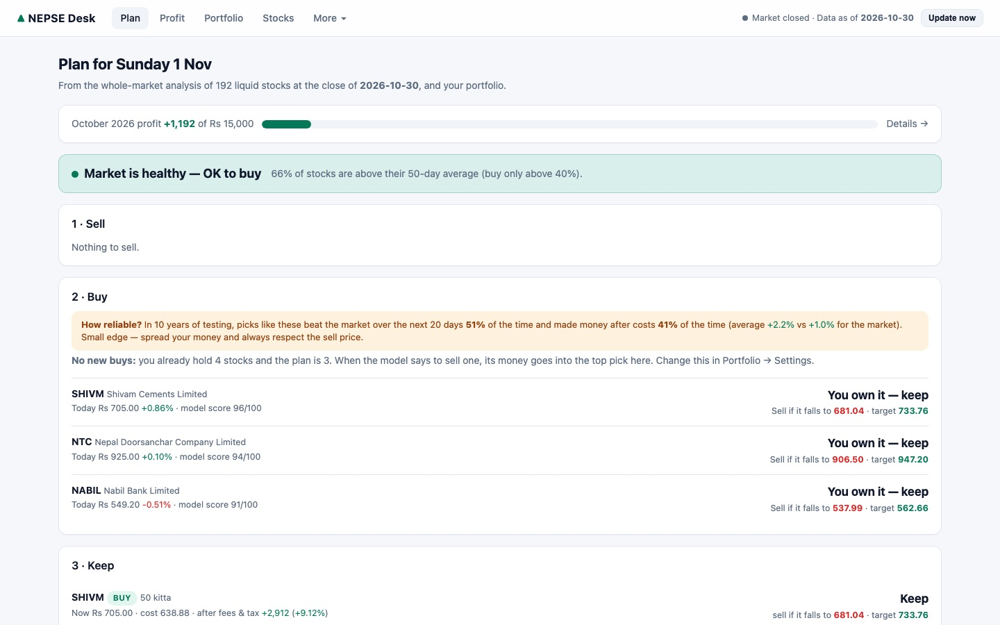

Growth of Rs 1
Weekly, after costs and tax, log scale. Top-3 model with market filter vs equal-weight buy & hold.
- Model (top 3, market filter)
- Buy & hold
- Model without filter
Loading chart…
A gradient-boosted model scores every listed company on the Nepal Stock Exchange each day. Its ranking is statistically strong. But once you trade at the next day's open and pay commission, slippage and tax, it does not beat simply holding the market. This site shows both halves of that story.
What you get when you run it on your own computer. Real market data, with a demo portfolio filled in to show how tracking works.

Every year is predicted by a model trained only on earlier years. Trades fill at the next open with 0.9% cost per side and 7.5% capital-gains tax. Hover or tap any chart for exact values.
Weekly, after costs and tax, log scale. Top-3 model with market filter vs equal-weight buy & hold.
Loading chart…
The model holds cash in 2016 (not enough training data yet).
CAGR by period and worst fall (MDD).
| Strategy | 16–20 | 21–26 | MDD |
|---|---|---|---|
| Model, filter | 2.5% | 9.0% | −41.7% |
| Model, no filter | 5.1% | −6.0% | −63.4% |
| Momentum, filter | 6.9% | 1.8% | −53.1% |
| Buy & hold | 30.0% | 7.8% | −48.2% |
177 trades · 42.9% profitable · winners +13.8% vs losers −7.2% on average.
Average 20-day return from the next open. The ranking clearly works.
Daily Spearman correlation of score with 20-day forward return.
2016–2026 CAGR as commission + slippage per side rises. Baseline is 0.90%.
CAGR by number of holdings. No setting beats buy & hold over the full period.
Average liquid stocks per day (turnover ≥ Rs 5M, price ≥ Rs 100). Early years rest on very few names.
The same pipeline runs every trading day inside the local app.
Daily OHLCV for ~370 companies since 2011, adjusted for bonus and rights issues using NEPSE's daily price limit.
Returns, trend, volatility, liquidity, 52-week range, market breadth and cross-sectional ranks.
Gradient-boosted trees predict market-relative returns; their daily ranks are averaged into one score.
Hold the 3 best-ranked stocks, sell below rank 30, and go to cash when market breadth is weak.
The full app (daily signals, portfolio tracker with real fees and tax, stock explorer) runs privately on your own computer.
git clone https://github.com/prashantbhandary/nepse-quant-desk.git
cd nepse-quant-desk
./start.shData cleaning, the bonus/rights adjustment, walk-forward design, robustness checks (random ranking, costs, tree settings, feature importance) and limitations.
Open the research report